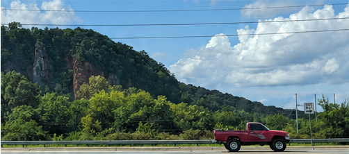

01
搭船的人
當光開始一點一滴逃離北半球的白晝時，我經常在曙暮光環抱中聽見長長的鳴笛聲傳進曼哈頓中城與長島市之間的東河河道，我並沒有睜開眼睛，腦海中卻總投影出一艘白色底的輪船，拖著它被鏽蝕的身軀，在水上漂浮。
Candid.Curious.Independent.
Portfolio01 / Writing archive
Essays, poems, and notes about roads, people, and the places where they meet.
Follow a feeling instead of a timeline. Browse by the shape of a piece: an essay on the road, an essay about people, or a poem.

Roadside detail Featured Roadtrip essay 2024-08-01 布朗斯維克燉肉（Brunswick Stew） 某個遙遠的公路上，道路兩旁的加油站皆會附設由木棧板搭建的小間餐廳，專賣BBQ。02 / Browse by tag
Use a tag to find the current running thread through the archive. Every card offers a line from the piece itself.
當光開始一點一滴逃離北半球的白晝時，我經常在曙暮光環抱中聽見長長的鳴笛聲傳進曼哈頓中城與長島市之間的東河河道，我並沒有睜開眼睛，腦海中卻總投影出一艘白色底的輪船，拖著它被鏽蝕的身軀，在水上漂浮。
看見信箱有中秋月餅的廣告，抬頭一年已過。這讓我想起《白日焰火》裡的一幕，男主騎著機車進入地下道，不到短短五秒鐘的黑暗，地道那一頭出來已是十年之後，大雪紛飛。
你想過嗎，如果父女和母子是前世情人，而最後結婚的對象是上輩子欠債討債的關係，那麼一起上班的人，又是在什麼場合遇到，做了些什麼，才造成我們這輩子朝夕相對，卻又不是特別親近的關係呢？
1. 項鍊 那是第一個接濟偷渡者的夜晚 五徇節的教會離邊界很遠 後座沒有人 車子的輪胎 不會說當地方言
有人在乎電影開頭嗎？
離開費城的晚上，天氣開始轉涼。我和Ｌ壓線從Fishtown叫車到火車站，只預留一點時間排隊上車。
不可否認的 我是 是深秋日床上的一團慾望
“What if this is a past life as well, and we are already something else to each other in our next life?”
如果這世界是由雷電組成的＼
我看到的美國，是一個貧窮的國家。
2016那年我高二，台灣剛經歷政黨輪替，一切氣象皆新，就連校園內部都沾染了躁動不安的氣味。
定居舊金山灣區後，我過起眾人稱羨的碼農生活。
二零二三年夏天，有人在阿帕拉契山上發現一種非本地的小蟲。
一、城市 最終還是在墜地的城市裡 當起時間的導遊
我是秋天裡的白色 你是不會懂的
「一刀窮，一刀富。」
上
某個遙遠的公路上，道路兩旁的加油站皆會附設由木棧板搭建的小間餐廳，專賣BBQ。
二零二零是大疫元年，校園關閉前夕，我和身邊同學紛紛飛回台灣避難。
⼈⼀⽣最⼤的孤獨，莫過於與⾃⼰的⽂化格格不入。
No pieces carry this tag yet.
03 / Pages